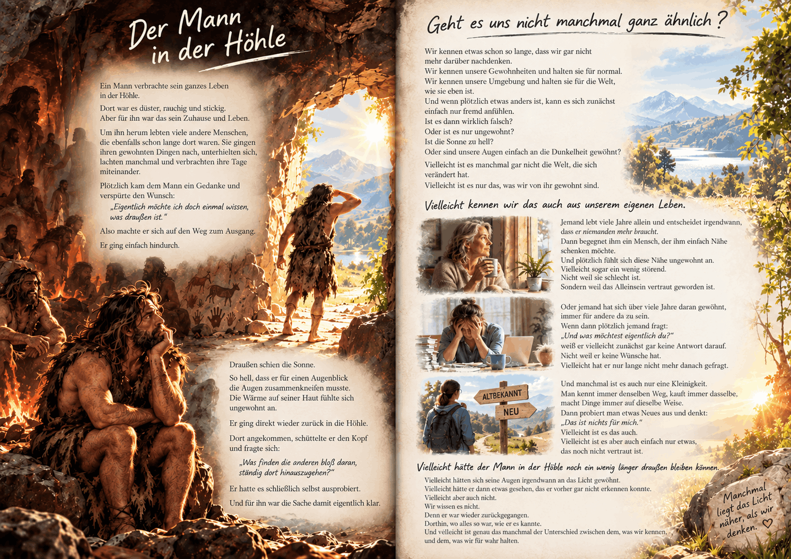

No Code Website BuilderEine Gedankenreise zum Verschenken

Der Mann in der Höhle
Ein Mann verbrachte sein ganzes Leben in der Höhle.
Dort war es düster, rauchig und stickig.
Aber für ihn war das sein Zuhause und Leben.
Um ihn herum lebten viele andere Menschen, die ebenfalls schon lange dort waren.
Sie gingen ihren gewohnten Dingen nach, unterhielten sich,
lachten manchmal und verbrachten ihre Tage miteinander.
Plötzlich kam dem Mann ein Gedanke und verspürte den Wunsch:
„Eigentlich möchte ich doch einmal wissen, was draußen ist.“
Also machte er sich auf den Weg zum Ausgang.
Er ging einfach hindurch.
Draußen schien die Sonne.
So hell, dass er für einen Augenblick die Augen zusammenkneifen musste.
Die Wärme auf seiner Haut fühlte sich ungewohnt an.
Er ging direkt wieder zurück in die Höhle.
Dort angekommen, schüttelte er den Kopf und fragte sich:
„Was finden die anderen bloß daran, ständig dort hinauszugehen?“
Er hatte es schließlich selbst ausprobiert.
Und für ihn war die Sache damit eigentlich klar.
Geht es uns nicht manchmal ganz ähnlich?
Wir kennen etwas schon so lange,
dass wir gar nicht mehr darüber nachdenken.
Wir kennen unsere Gewohnheiten und halten sie für normal.
Wir kennen unsere Umgebung und halten sie für die Welt, wie sie eben ist.
Und wenn plötzlich etwas anders ist,
kann es sich zunächst einfach nur fremd anfühlen.
Ist es dann wirklich falsch?
Oder ist es nur ungewohnt?
Ist die Sonne zu hell?
Oder sind unsere Augen einfach an die Dunkelheit gewöhnt?
Vielleicht ist es manchmal gar nicht die Welt, die sich verändert hat.
Vielleicht ist es nur das, was wir von ihr gewohnt sind.
Vielleicht kennen wir das auch aus unserem eigenen Leben.
Jemand lebt viele Jahre allein und entscheidet irgendwann,
dass er niemanden mehr braucht.
Dann begegnet ihm ein Mensch, der ihm einfach Nähe schenken möchte.
Und plötzlich fühlt sich diese Nähe ungewohnt an.
Vielleicht sogar ein wenig störend.
Nicht weil sie schlecht ist.
Sondern weil das Alleinsein vertraut geworden ist.
Oder jemand hat sich über viele Jahre daran gewöhnt,
immer für andere da zu sein.
Wenn dann plötzlich jemand fragt:
„Und was möchtest eigentlich du?“
weiß er vielleicht zunächst gar keine Antwort darauf.
Nicht weil er keine Wünsche hat.
Vielleicht hat er nur lange nicht mehr danach gefragt.
Und manchmal ist es auch nur eine Kleinigkeit.
Man kennt immer denselben Weg, kauft immer dasselbe,
macht Dinge immer auf dieselbe Weise.
Dann probiert man etwas Neues aus und denkt:
„Das ist nichts für mich.“
Vielleicht ist es das auch.
Vielleicht ist es aber auch einfach nur etwas, das noch nicht vertraut ist.
Vielleicht hätte der Mann in der Höhle noch ein wenig länger draußen bleiben können.
Vielleicht hätten sich seine Augen irgendwann an das Licht gewöhnt.
Vielleicht hätte er dann etwas gesehen, das er vorher gar nicht erkennen konnte.
Vielleicht aber auch nicht.
Wir wissen es nicht.
Denn er war wieder zurückgegangen.
Dorthin, wo alles so war, wie er es kannte.
Und vielleicht ist genau das manchmal der Unterschied zwischen dem,
was wir kennen, und dem, was wir für wahr halten.
🌿 Gedankenreisen – Geschichten
https://www.youtube.com/@Gedankenreisen-Geschichten
Was wir lange kennen, halten wir leicht für normal.
Der Mann in der Geschichte lebt sein ganzes Leben in der Höhle. Für ihn ist die Dunkelheit, der Rauch und die stickige Luft einfach seine Welt. Als er zum ersten Mal hinausgeht, empfindet er die helle Sonne nicht als etwas Schönes, sondern als etwas Ungewohntes.
Vielleicht geht es uns manchmal ähnlich.
Nicht alles, was uns vertraut ist, muss deshalb falsch sein. Aber genauso wenig muss alles, was uns fremd erscheint, falsch sein.
Manchmal verändert sich nicht die Welt um uns herum – sondern nur unser Blick auf sie.
Was wir lange kennen, halten wir leicht für normal.
Der Mann in der Geschichte lebt sein ganzes Leben in der Höhle. Für ihn ist die Dunkelheit, der Rauch und die stickige Luft einfach seine Welt. Als er zum ersten Mal hinausgeht, empfindet er die helle Sonne nicht als etwas Schönes, sondern als etwas Ungewohntes.
Vielleicht geht es uns manchmal ähnlich.
Nicht alles, was uns vertraut ist, muss deshalb falsch sein. Aber genauso wenig muss alles, was uns fremd erscheint, falsch sein.
Manchmal verändert sich nicht die Welt um uns herum – sondern nur unser Blick auf sie.
Vielleicht begegnet Dir irgendwann etwas, das sich zunächst fremd anfühlt.
Vielleicht ist es etwas Neues.
Vielleicht ein anderer Mensch.
Vielleicht ein anderer Blick auf etwas, das Du schon lange kennst.
Du musst es nicht sofort annehmen.
Aber vielleicht darf die Frage einfach einen kleinen Moment bleiben:
Ist es wirklich falsch – oder ist es nur ungewohnt?
No Code Website Builder